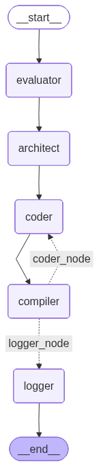
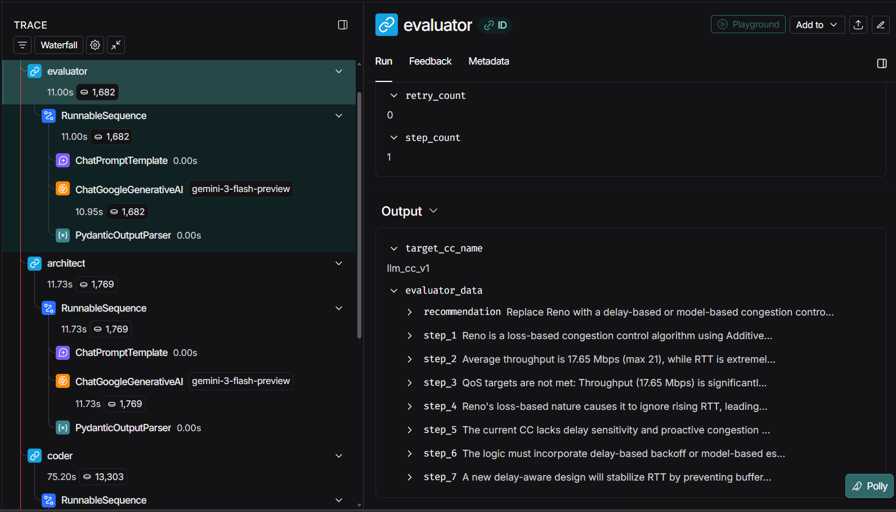
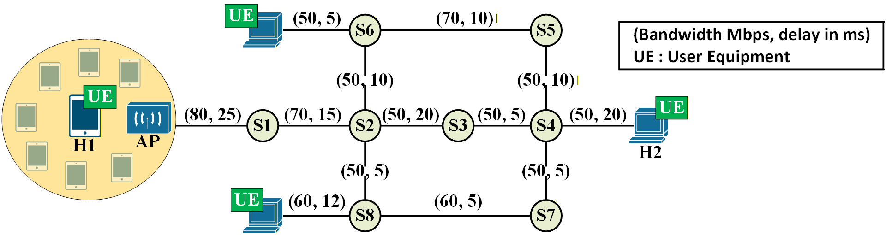

Redesigning the Internet with Agentic AI
FlexNGIA · ISITCom, University of Sousse, Tunisia
The Internet's core protocols — TCP congestion control, routing, and service orchestration — were designed decades ago with static, hand-tuned heuristics. FlexNGIA proposes a paradigm shift: letting autonomous LLM-powered agents design, implement, and manage network protocols at runtime. The AI agent observes real-time network metrics, reasons about the current state, designs new protocol logic, generates production-grade kernel C code, and deploys it into the running Linux kernel — with zero downtime.
High-precision TCP monitoring and runtime-switchable congestion control in the Linux kernel.
LangGraph agent that evaluates, designs, codes, and deploys congestion control algorithms autonomously.
Mininet-WiFi wireless testbed, metric collection, analysis, and automation scripts.
Prerequisites, installation, VM download, and quick-start instructions.
Linux kernel extensions that provide high-precision TCP monitoring and runtime-switchable congestion control for the AI agent.
The Goal: To monitor TCP performance indicators (like Congestion Window, Round-Trip Time, and Throughput) in real-time with microsecond precision.
Standard Linux tools (like polling with ss or netstat) operate in "User Space" and only take periodic snapshots of the network. Because TCP reacts to network changes in milliseconds (especially during phases like Slow Start), these standard tools miss crucial, transient events. To get true, high-precision data, we must monitor the connections directly from inside the operating system's core: the Linux Kernel.
To build this zero-latency monitoring system, we executed four main steps:
setsockopt, a system call that acts as a bridge. This allows a standard User Space application (like an iperf client) to securely tell the Kernel to turn monitoring ON or OFF for its connection.The following sections break down each of these steps, explaining both the underlying operating system concepts and the actual C code implementation.
tcp_sock StructureIn Linux, every active network connection is represented by a massive data structure called struct tcp_sock. It holds the "State Machine" of the connection (how many packets are lost, the current congestion window, etc.). However, it does not permanently store the "Current Sending Rate," nor does it know if we want to monitor it.
We modified the header file include/linux/tcp.h to append two custom fields to this structure:
sending_rate_mbps — To store our calculated real-time throughput.is_monitored — A boolean flag to ensure we only trace the connections we care about. Tracing every connection on a server would cause severe performance degradation.struct tcp_sock {
struct inet_connection_sock inet_conn;
/* --- CUSTOM MONITORING FIELDS --- */
u64 sending_rate_mbps;
bool is_monitored;
/* -------------------------------- */
u16 tcp_header_len;
/* ... */
};setsockoptsetsockopt?Operating systems are divided into User Space (where your normal apps run) and Kernel Space (where the core OS and hardware drivers run). User apps cannot directly alter Kernel memory.
To allow an app to configure its network connection safely, Linux provides a system call named setsockopt (Set Socket Option). By adding a custom option to this interface, we give user-space applications a remote control to toggle the is_monitored flag inside the kernel.
We reserved Option 150 in net/ipv4/tcp.c. When an application calls setsockopt(fd, IPPROTO_TCP, 150, &val, sizeof(val)), the kernel executes the following logic. We also implement a "Snapshot" here: the exact moment monitoring is turned on, we log the initial state.
/* Inside do_tcp_setsockopt() in net/ipv4/tcp.c */
case 150:
if (val == 1) {
tp->is_monitored = true;
trace_tcp_monitor_log(sk); /* Snapshot initial state */
} else {
tp->is_monitored = false;
}
return 0;If you want to print a message in standard C, you use printf. In the kernel, developers historically used printk. However, writing text to a log buffer is extremely slow. If we used printk for every network packet, the network speed would collapse.
A Tracepoint is a modern, static hook tied to the Linux ftrace subsystem. When disabled, it acts as a NOP (No Operation) instruction, taking 0 CPU cycles. When enabled, it securely packs binary data (integers, IP addresses) into a ring buffer incredibly fast, to be read by the user later.
We defined a new trace event called tcp_monitor_log in include/trace/events/tcp.h. This defines exactly what data we are extracting from the socket:
TRACE_EVENT(tcp_monitor_log,
TP_PROTO(struct sock *sk),
TP_ARGS(sk),
TP_STRUCT__entry(
__field(u32, saddr)
__field(u16, sport)
__field(u32, daddr)
__field(u16, dport)
__field(u64, sending_rate_mbps)
__field(u32, srtt_ms)
__field(u32, cwnd)
),
TP_fast_assign(
struct tcp_sock *tp = tcp_sk(sk);
struct inet_sock *inet = inet_sk(sk);
__entry->saddr = inet->inet_saddr;
__entry->sport = ntohs(inet->inet_sport);
__entry->sending_rate_mbps = tp->sending_rate_mbps;
__entry->cwnd = tp->snd_cwnd;
__entry->srtt_ms = (tp->srtt_us >> 3) / 1000;
),
TP_printk("id=%pI4:%u->%pI4:%u srate=%llu Mbps cwnd=%u",
&__entry->saddr, __entry->sport,
&__entry->daddr, __entry->dport,
__entry->sending_rate_mbps, __entry->cwnd)
);A hook is only useful if it is placed in the right location. TCP dynamically updates its metrics (like Congestion Window) when it receives an Acknowledgement (ACK) from the receiver.
Therefore, we place our tracepoint at the very end of the tcp_ack() function. This ensures we capture the Final Verdict — the exact state of the connection immediately after the kernel has processed the ACK and updated its metrics. Additionally, we calculate the real-time throughput right before the hook fires.
First, we calculate the rate in tcp_rate_gen() (located in net/ipv4/tcp_rate.c):
if (tp->is_monitored && rs->snd_interval_us > 0) {
u64 bits_sent = (u64)rs->delivered * tp->mss_cache * 8;
tp->sending_rate_mbps = div64_u64(bits_sent, rs->snd_interval_us);
}Next, we trigger the event inside tcp_ack() (located in net/ipv4/tcp_input.c):
static int tcp_ack(struct sock *sk, const struct sk_buff *skb, int flag)
{
/* ... standard processing ... */
tcp_rate_gen(sk, ...);
tcp_cong_control(sk, ...);
if (tp->is_monitored) {
trace_tcp_monitor_log(sk);
}
return 1;
}To use this system, you must instruct the Linux ftrace subsystem to arm the tracepoint. The order of operations is critical to avoid system noise.
TRACE_DIR="/sys/kernel/debug/tracing"
# 1. PAUSE: Stop recording globally to perform maintenance
echo 0 > $TRACE_DIR/tracing_on
# 2. CLEAR: Wipe the ring buffer
echo > $TRACE_DIR/trace
# 3. ENABLE: Activate our specific custom TCP event
echo 1 > $TRACE_DIR/events/tcp/tcp_monitor_log/enable
# 4. START: Globally arm the tracing system
echo 1 > $TRACE_DIR/tracing_onOnce an application (like an iperf client) activates option 150 via setsockopt, you can view the high-precision logs streaming in real-time:
cat /sys/kernel/debug/tracing/trace_pipe# Initial Snapshot (Triggered by setsockopt)
tcp_monitor: id=10.0.0.1->10.0.0.2 srate=0 Mbps cwnd=10
# Traffic Begins (Triggered by tcp_ack)
tcp_monitor: id=10.0.0.1->10.0.0.2 srate=5 Mbps cwnd=11
tcp_monitor: id=10.0.0.1->10.0.0.2 srate=12 Mbps cwnd=12
tcp_monitor: id=10.0.0.1->10.0.0.2 srate=48 Mbps cwnd=24A minimal TCP congestion control (CC) proxy that delegates all congestion behavior to another CC algorithm chosen at runtime. The proxy itself implements no control logic — it simply forwards the kernel's CC callbacks to the selected delegate.
proxy (as a TCP CC algorithm)reno (modifiable at runtime)ssthresh(), cong_avoid(), undo_cwnd()/sys/module/tcp_proxy/parameters/delegate_ccUse proxy as the system-wide CC algorithm and switch the delegate dynamically to compare CC algorithms. The tcp_proxy module is perceived by the kernel as a standard congestion control module. It should be set as the active congestion control algorithm in the Linux system by configuring proxy as the default congestion control. The kernel and the system remain unaware of the delegation mechanism itself, as all delegation is handled internally.
delegate_cc, which holds the name of the target CC algorithm (e.g., reno, llm_cc_v0). On load or when the parameter changes, the proxy resolves the delegate using tcp_ca_find(), pins its module with try_module_get(), and forwards CC callbacks to the delegate.ssthresh() → Delegate's slow-start threshold functioncong_avoid() → Delegate's congestion avoidance functionundo_cwnd() → Delegate's cwnd undo functiondelegate_cc/sys/module/tcp_proxy/parameters/delegate_ccrenoproxy registers as a CC algorithm, resolves the default delegate, and pins it. On unload, it releases the delegate's module reference and unregisters itself.The delegate must implement the following callbacks: ssthresh(), cong_avoid(), and undo_cwnd().
| Category | Details |
|---|---|
| Compatible | Traditional loss-based CC algorithms such as reno |
| Not Suitable | Algorithms like BBR, which use cong_control() instead of cong_avoid() |
net/ipv4/tcp_proxy.c.net/ipv4/Makefile): Add this line after other TCP congestion modules:
obj-$(CONFIG_TCP_CONG_PROXY) += tcp_proxy.onet/ipv4/Kconfig): Add this at the end (below other CC configs):
config TCP_CONG_PROXY
tristate "TCP Proxy congestion control"
default y
help
A TCP congestion control module that delegates control to another algorithm.
You can select the delegate at runtime via /sys/module/tcp_proxy/parameters/delegate_cc.menuconfig: From the root of the kernel source directory, run:
make menuconfigNavigate to: Networking support → Networking options → TCP: advanced congestion control. Enable the option: [M] TCP Proxy congestion control.
make -j"$(nproc)"
sudo make modules_install
sudo make install
sudo reboot# With default delegate (reno):
sudo modprobe tcp_proxy
# With a specific delegate:
sudo modprobe tcp_proxy delegate_cc=renosudo sysctl -w net.ipv4.tcp_congestion_control=proxy# Available CC algorithms:
sysctl net.ipv4.tcp_available_congestion_control
# Active CC algorithm:
cat /proc/sys/net/ipv4/tcp_congestion_control# Switch to a custom CC algorithm:
echo -n "llm_cc_v0" | sudo tee /sys/module/tcp_proxy/parameters/delegate_cc
# Switch to reno:
echo -n "reno" | sudo tee /sys/module/tcp_proxy/parameters/delegate_ccsudo modprobe -r tcp_proxy# Check available CC algorithms:
sysctl net.ipv4.tcp_available_congestion_control
# Confirm active CC algorithm:
cat /proc/sys/net/ipv4/tcp_congestion_control
# Read current delegate:
cat /sys/module/tcp_proxy/parameters/delegate_ccAt FlexNGIA 2.0, we engineer autonomous, production-grade systems that close the loop between network telemetry and transport-layer control. This repository delivers a fully autonomous framework for designing, implementing, and deploying TCP Congestion Control (CC) algorithms directly into the Linux kernel.
Our CC agent:
All of this is orchestrated by an LLM-powered agent built on LangGraph (part of the LangChain ecosystem) for robust control flow, state, tooling, and observability.
LangGraph is a Python framework for building agentic and multi-agent applications where an LLM controls application flow. We use it to deliver a graph-based AI system that:
This replaces brittle, one-off control flow with a proven, observable, and extensible architecture.
The agent is modeled as a graph:
In our pipeline, each stage is a node. Nodes can be:
Workflow and routing:
| Stage | Node | Role |
|---|---|---|
| 1 | Evaluator | Analyzes current CC performance and network metrics; identifies bottlenecks (bandwidth-limited, latency-limited, loss-limited) via multi-step reasoning |
| 2 | Architect | Translates the diagnosis into a mathematical CC design — specifying ssthresh, cong_avoid, and undo_cwnd logic with safety constraints |
| 3 | Coder | Converts the architect's blueprint into valid Linux kernel C code using a strict kernel module skeleton; self-corrects on errors |
| 4 | Compiler | Builds the .ko module, unloads the previous CC, loads the new one via insmod, and switches the proxy delegate |
Each node produces structured output (typed Python objects) — no ad-hoc parsing of free-form LLM text.

Each node: 1) Receives the current shared state, 2) reads what it needs, 3) writes its outputs, 4) returns an updated state.
The state is defined in agent/schemas.py:
class AgentState(TypedDict):
"""The memory passed between nodes"""
session_id: str
step_count: int
metrics: dict
current_cc: str
target_cc_name: str
# 7-step analysis
evaluator_data: Optional[EvaluatorOutput]
architect_data: Optional[ArchitectOutput]
# Execution
c_code: str
compiler_output: str
error: bool
retry_count: intsession_id: Unique ID for the current experiment run; used for filenames, logs, and results.step_count: Number of steps (node transitions) taken so far; useful for debugging and safety limits.metrics: Latest network telemetry (throughput, RTT, cwnd, retransmissions, etc.).current_cc: Name of the currently active kernel CC algorithm (e.g., cubic, bbr, llm_cc_v1).target_cc_name: Name the agent intends to give to the new CC algorithm/module.evaluator_data (EvaluatorOutput): Structured diagnostic output from the Evaluator node (bottleneck type, narrative, summaries).architect_data (ArchitectOutput): Structured blueprint from the Architect node (formulas, control logic).c_code: Latest C implementation generated by the Coder node.compiler_output: Build + kernel tooling logs (stdout/stderr from make, insmod, rmmod).error: Flag indicating whether the last operation (usually compilation or module load) failed.retry_count: Number of times the agent has attempted to fix and recompile the module.Naively parsing free-form LLM outputs is brittle. We enforce structure:
TypedDict, pydantic, etc.)In agent/schemas.py:
EvaluatorOutput: diagnosis_steps, bottleneck_type, qos_gaps, etc.ArchitectOutput: high_level_strategy, ssthresh_logic, cong_avoid_logic, etc.Coder and Compiler outputsAgentStateThis guarantees well-formed data across the pipeline — no ad-hoc parsers.
The CC agent's core logic is split into four primary LangGraph nodes, plus logging.
metrics, current_cc, session_id, step_countEvaluatorOutput): diagnosis_steps, bottleneck_type (e.g., "bandwidth_limited" / "latency_limited" / "loss_limited"), qos_summary, recommendationsevaluator_data; increments step_countssthresh, cong_avoid, undo_cwnd, etc. should behave.evaluator_data, metrics, current_cc, target_cc_name (may initialize or update)ArchitectOutput): high_level_strategy, ssthresh_logic, cong_avoid_logic, undo_cwnd_logic, safety_constraintsarchitect_data; sets or refines target_cc_name (e.g., llm_cc_v1); increments step_countarchitect_data, target_cc_name, previous c_code (if retrying), compiler_output (if previous build failed), retry_countCoderOutput): c_code (full .c source code), comments (major design decisions), applied_fixes (on retries)c_code; clears or updates error (typically reset before compilation); increments step_countagent/tools/compiler.py and other tools.c_code, target_cc_name, session_id, retry_countCompilerOutput): compiler_output (logs from make, insmod, rmmod), success (bool), activated_cc_namecompiler_output; updates current_cc; sets error (true if build or insmod failed, false otherwise); increments retry_count on failure; increments step_counterror is true, workflow routes back to Coder for self-correctionagent/traces/. Each session_id gets its own trace directory or file set.LangGraph/LangChain expose tools as standard Python callables that the agent can invoke. These tools are invoked from inside graph nodes to keep decisions data-driven and observable.
agent/tools/compiler.py
make, insmod, and rmmod.ko modules in agent/workspace/current_ccagent/tools/get_current_cc.py
/proc / /sysagent/tools/get_metrics_summary.py
AgentStateagent/tools/trace_logger.py
session_id gets its own file set under agent/traces/ for post-mortem analysisInstall dependencies and start the agent (root privileges required for kernel interactions):
pip install -r requirements.txtsudo python3 agent/main.pyThe agent listens for new experiments by monitoring the results folder. Once a new session is created, it will start the workflow, generate the congestion control module, compile it, and load it into the kernel. Monitor progress in real time via detailed logs in agent/traces/.
LangSmith provides end-to-end tracing and evaluation for LangChain apps. In this project, you can:
Basic setup (if you have a LangSmith account):
export LANGCHAIN_TRACING_V2="true"
export LANGCHAIN_ENDPOINT="https://api.smith.langchain.com"
export LANGCHAIN_API_KEY="YOUR_LANGSMITH_KEY"
export LANGCHAIN_PROJECT="flexngia-cc-agent"Then run the agent and inspect traces in the LangSmith UI.

All experiments are conducted in Mininet-WiFi, providing a reproducible wireless testbed for evaluating AI-generated CC algorithms against standard schemes under realistic conditions.
The network is defined in mininet/topo.py. It simulates a wireless scenario:
iperf3
To monitor CC performance, kernel-level TCP statistics are collected in real time:
results/{session_id}.csvagent/tools/get_metrics_summary.py. These metrics are fed back into the LangGraph state as metrics, closing the loop between environment and agent.results/{session_id}.csvUse analysis/plot_results.py to convert raw CSV logs into visual dashboards.
run_test.sh)run_test.sh automates the full AI-driven loop:
rmmod)cd congestion-control-agent
sudo ./run_test.shThis will:
agent/main.py)results/{session_id}.csvagent/traces/agent/workspace/analysis/In separate terminals:
# Terminal 1: Start network topology
cd mininet
sudo python3 topo.py# Terminal 2: Start the LangGraph CC agent
cd agent
sudo python3 main.pyOptional: export the LangSmith variables (see AI Agent → Run & Debug) to monitor the graph execution in real time.
Set up the FlexNGIA environment on your machine or download the pre-configured VM.
The recommended way to get started is with our pre-configured VM, which includes the patched Linux kernel with FlexNGIA real-time monitoring, Mininet-WiFi, and the AI-driven congestion control agent.
The FlexNGIA VM image is currently being prepared. Request early access below and we will notify you when it becomes available.
.envDownload the Mininet-WiFi VM with Python pre-installed: Download Link — Login: wifi / Password: wifi
# 1) Clone the repository
git clone https://github.com/Youneskr/FlexNGIA-2.0.git
cd FlexNGIA-2.0
# 2) System dependencies
sudo apt update
sudo apt install -y build-essential git openvswitch-switch python3-pip
# 3) Python dependencies
pip install -r congestion-control-agent/requirements.txt# Run the full automated experiment
cd congestion-control-agent
sudo ./run_test.shThis will start the Mininet-WiFi topology, launch the AI agent, run an end-to-end experiment, and generate results and plots.
For manual execution or advanced configuration, see the detailed guides:
If you use this code or refer to this work, please cite the following papers.
FlexNGIA 2.0: Redesigning the Internet with Agentic AI — Protocols, Services, and Traffic Engineering Designed, Deployed, and Managed by AI
M. F. Zhani, Y. Korbi and Y. Mkadem, 2025. arXiv:2509.02124
The flagship paper introducing AI-driven, autonomous protocol design, deployment, and management for next-generation networks. This paper covers the full vision: custom kernel modules, the LangGraph-based CC agent, and experimental results.
@misc{zhani2025flexngia20redesigninginternet,
title={FlexNGIA 2.0: Redesigning the Internet with Agentic AI
-- Protocols, Services, and Traffic Engineering
Designed, Deployed, and Managed by AI},
author={Mohamed Faten Zhani and Younes Korbi and Yamen Mkadem},
year={2025},
eprint={2509.02124},
archivePrefix={arXiv},
primaryClass={cs.NI},
url={https://arxiv.org/abs/2509.02124},
}Congestion Control in Wi-Fi Networks — State of the Art, Performance Evaluation, and Key Research Directions
Y. Korbi, M. F. Zhani and J. Kaippallimalil, "Congestion Control in Wi-Fi Networks," in IEEE Access, vol. 12, pp. 94972–94989, 2024. DOI: 10.1109/ACCESS.2024.3425271
The foundational survey and experimental evaluation of TCP congestion control in wireless networks. Covers BBR, CUBIC, Reno, Vegas, and more. The custom TCP monitoring module documented on this site was developed for and utilized in this paper.
@ARTICLE{10589468,
author={Korbi, Younes and Zhani, Mohamed Faten and Kaippallimalil, John},
journal={IEEE Access},
title={Congestion Control in Wi-Fi Networks — State of the Art,
Performance Evaluation, and Key Research Directions},
year={2024},
volume={12},
number={},
pages={94972-94989},
keywords={Delays;Packet loss;Measurement;Performance evaluation;
Wireless networks;Wireless fidelity;Internet;
Telecommunication congestion control;BBR;CUBIC;
TCP;Reno;Vegas;wireless networks},
doi={10.1109/ACCESS.2024.3425271}
}FlexNGIA: A Fully Flexible Novel Architecture for the Next-Generation Tactile Internet
M. F. Zhani, "FlexNGIA: A Fully Flexible Novel Architecture for the Next-Generation Tactile Internet," in Proceedings of the ACM SIGCOMM 2019 Workshop on Networking for Emerging Applications and Technologies (NEAT'19), Beijing, China, 2019, pp. 56. DOI: 10.1145/3341558.3359666
The original FlexNGIA vision paper, proposing a fully flexible architecture for the next-generation Tactile Internet. This work laid the foundation for the AI-driven approach in FlexNGIA 2.0.
@inproceedings{10.1145/3341558.3359666,
author={Zhani, Mohamed Faten},
title={FlexNGIA: A Fully Flexible Novel Architecture for the
Next-Generation Tactile Internet},
year={2019},
isbn={9781450368766},
publisher={Association for Computing Machinery},
address={New York, NY, USA},
url={https://doi.org/10.1145/3341558.3359666},
doi={10.1145/3341558.3359666},
booktitle={Proceedings of the ACM SIGCOMM 2019 Workshop on
Networking for Emerging Applications and Technologies},
pages={56},
numpages={1},
location={Beijing, China},
series={NEAT'19}
}